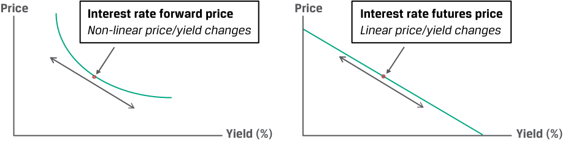
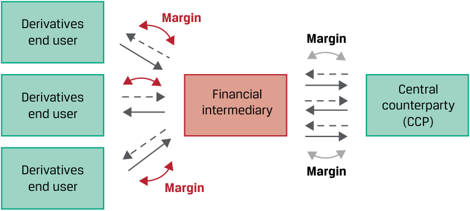

Learning Module 6 Pricing and Valuation of Futures Contracts - Part 2: Effect of Central Clearing of OTC Derivatives
Volume 7: Derivatives
Learning Module 6 Pricing and Valuation of Futures Contracts
Part 2/2: Effect of Central Clearing of OTC Derivatives (PDF Pages 151–156)
Tập 7: Công cụ Phái sinh (Derivatives)
Học phần 6: Định giá và Xác định Giá trị của Hợp đồng Tương lai (Pricing and Valuation of Futures Contracts)
Phần 2/2: Tác động của Cơ chế Bù trừ Trung tâm đối với Công cụ Phái sinh OTC (Effect of Central Clearing of OTC Derivatives) (Trang PDF 151–156)
Exhibit 5: Convexity Bias
Bảng minh họa 5: Độ lệch lồi (Convexity Bias)

Chú thích hình ảnh: - Đồ thị bên trái (Giá kỳ hạn lãi suất - Interest rate forward price): Đường cong biểu diễn mối quan hệ thay đổi giá/lợi suất phi tuyến tính (Non-linear price/yield changes) theo Lợi suất (Yield (%)}). - Đồ thị bên phải (Giá tương lai lãi suất - Interest rate futures price): Đường thẳng biểu diễn mối quan hệ thay đổi giá/lợi suất tuyến tính (Linear price/yield changes) theo Lợi suất (Yield (%)).
The discounting feature of the FRA, which is not present in the futures contract, leads to a convexity bias that is greater for longer discounting periods. You will recall from an earlier lesson that a discount factor is the price equivalent of a zero rate and is the present value of a currency unit on a future date, which may also be interpreted as the price of a zero-coupon cash flow or bond. We will show later how this discount factor is used to price interest rate swaps and other derivatives.
Tính năng chiết khấu của hợp đồng FRA, vốn không hiện diện trong hợp đồng tương lai, dẫn đến một độ lệch lồi (convexity bias) càng lớn đối với các kỳ chiết khấu càng dài. Bạn sẽ nhớ lại từ bài học trước rằng hệ số chiết khấu (discount factor) là đại lượng tương đương về mặt giá của một mức lãi suất zero và là giá trị hiện tại của một đơn vị tiền tệ vào một ngày trong tương lai, mà cũng có thể được hiểu là mức giá của một dòng tiền hoặc trái phiếu không trả lãi định kỳ. Sau này chúng ta sẽ chỉ ra cách thức hệ số chiết khấu này được sử dụng để định giá các hợp đồng hoán đổi lãi suất và những công cụ phái sinh khác.
EFFECT OF CENTRAL CLEARING OF OTC DERIVATIVES
TÁC ĐỘNG CỦA CƠ CHẾ BÙ TRỪ TRUNG TÂM ĐỐI VỚI CÔNG CỤ PHÁI SINH OTC (EFFECT OF CENTRAL CLEARING OF OTC DERIVATIVES)
7
7
explain why forward and futures prices differ
Giải thích tại sao giá kỳ hạn và giá tương lai lại khác nhau.
In periods of market and/or counterparty financial stress, large price movements combined with a derivative counterparty’s inability to meet a margin call may force the closeout of a futures transaction prior to maturity. An OTC forward contract with more flexible credit terms, however, may remain outstanding.
Trong những giai đoạn căng thẳng tài chính của thị trường và/hoặc của đối tác, các biến động giá lớn kết hợp với việc một đối tác phái sinh mất khả năng đáp ứng lệnh gọi ký quỹ bổ sung (margin call) có thể buộc phải đóng vị thế (closeout) của một giao dịch hợp đồng tương lai trước khi đáo hạn. Tuy nhiên, một hợp đồng kỳ hạn OTC với các điều khoản tín dụng linh hoạt hơn vẫn có thể tiếp tục được duy trì.
The advent of derivatives central clearing, introduced in an earlier lesson, has created futures-like margining requirements for OTC derivative dealers who buy and sell forwards to derivatives end users. Dealers who are required to post cash or highly liquid securities to a central counterparty often impose similar requirements on derivatives end users. These dealer margin requirements reduce the difference in the cash flow impact of exchange-traded and OTC derivatives. This arrangement between dealers and their counterparties, shown in Exhibit 6, has been added to the original central clearing diagram from an earlier lesson.
Sự ra đời của cơ chế bù trừ trung tâm đối với công cụ phái sinh (derivatives central clearing), đã được giới thiệu trong một bài học trước, đã tạo ra những yêu cầu ký quỹ giống như hợp đồng tương lai đối với các nhà tạo lập thị trường công cụ phái sinh OTC (OTC derivative dealers) chuyên mua và bán hợp đồng kỳ hạn với những người sử dụng cuối cùng của công cụ phái sinh (derivatives end users). Các nhà tạo lập thị trường bị bắt buộc phải nộp tiền mặt hoặc các chứng khoán có tính thanh khoản cao cho một đối tác trung tâm (central counterparty – CCP) thường áp đặt những yêu cầu tương tự lên những người sử dụng cuối cùng của công cụ phái sinh. Những yêu cầu ký quỹ từ phía nhà tạo lập thị trường này làm giảm bớt sự khác biệt trong tác động dòng tiền giữa các công cụ phái sinh giao dịch trên sàn và công cụ phái sinh OTC. Thỏa thuận này giữa các nhà tạo lập thị trường và đối tác của họ, được thể hiện trong Bảng minh họa 6, đã được bổ sung thêm vào sơ đồ bù trừ trung tâm ban đầu từ bài học trước.
Exhibit 6: Margin Requirements for Centrally Cleared OTC Derivatives
Bảng minh họa 6: Yêu cầu Ký quỹ đối với các Công cụ Phái sinh OTC Được Bù trừ Trung tâm (Margin Requirements for Centrally Cleared OTC Derivatives)

Chú thích hình ảnh: Những người sử dụng cuối cùng của công cụ phái sinh (Derivatives end users) nộp Ký quỹ (Margin) cho Định chế tài chính trung gian (Financial intermediary), và Định chế tài chính trung gian lại nộp Ký quỹ (Margin) cho Đối tác trung tâm (Central counterparty – CCP).
Investors who actively use both exchange-traded futures or OTC forwards must therefore maintain sufficient cash or eligible collateral to fulfill margin or collateral requirements. Market participants must also consider the financing, transaction, and administrative costs of maintaining these positions when using derivatives in a portfolio.
Do đó, các nhà đầu tư tích cực sử dụng cả hợp đồng tương lai giao dịch trên sàn hoặc hợp đồng kỳ hạn OTC bắt buộc phải duy trì đủ lượng tiền mặt hoặc tài sản thế chấp đủ điều kiện (eligible collateral) để đáp ứng các yêu cầu ký quỹ hoặc thế chấp. Những người tham gia thị trường cũng phải cân nhắc đến các chi phí tài trợ (financing), chi phí giao dịch (transaction), và chi phí hành chính (administrative costs) của việc duy trì các vị thế này khi sử dụng công cụ phái sinh trong một danh mục đầu tư.
QUESTION SET
BỘ CÂU HỎI (QUESTION SET)
Forward and Futures Prices
Giá Kỳ hạn và Giá Tương lai (Forward and Futures Prices)
- Identify the following statement as true or false and justify your answer: If futures prices are positively correlated with interest rates, long futures contracts are more attractive than long forward positions for the same underlying and maturity.
- Hãy xác định phát biểu sau đây là đúng hay sai và giải thích câu trả lời của bạn: Nếu giá hợp đồng tương lai có tương quan dương với lãi suất, các hợp đồng mua tương lai (long futures contracts) sẽ hấp dẫn hơn so với các vị thế mua kỳ hạn (long forward positions) đối với cùng một tài sản cơ sở và cùng kỳ hạn.
Solution:
Lời giải:
The statement is true. If futures contract prices rise as interest rates rise, a long futures contract holder can reinvest futures contract profits at higher interest rates.
Phát biểu này là đúng. Nếu giá hợp đồng tương lai tăng lên khi lãi suất tăng lên, người nắm giữ vị thế mua hợp đồng tương lai có thể tái đầu tư các khoản lợi nhuận từ hợp đồng tương lai ở các mức lãi suất cao hơn.
- An investor seeks to hedge its three-month MRR exposure on a ₤25,000,000 liability in two months and observes an implied forward rate today (IFR2 m ,3 m ) of 2.95%. Calculate the settlement amounts if the investor enters a long pay-fixed (receive floating) FRA and a short futures contract, and compare and interpret the results if MRR2 m ,3 m settles at 3.25%.
- Solution:
- Một nhà đầu tư tìm cách phòng ngừa rủi ro lãi suất MRR kỳ hạn ba tháng trên một khoản nợ phải trả trị giá $£25,000,000$ phát sinh sau hai tháng nữa và quan sát thấy mức lãi suất kỳ hạn ngầm định ngày hôm nay ($\text{IFR}_{2\text{m},3\text{m}}$) là $2.95\%$. Hãy tính các số tiền tất toán nếu nhà đầu tư tham gia vào một vị thế mua FRA trả lãi cố định (nhận lãi thả nổi) và một vị thế bán hợp đồng tương lai (short futures contract), đồng thời so sánh và diễn giải kết quả nếu lãi suất $\text{MRR}_{2\text{m},3\text{m}}$ được ấn định ở mức $3.25\%$.
- Lời giải:
Solve for the pay-fixed FRA Cash Settlement (PV) value as follows:
Giải tìm giá trị Tất toán bằng tiền mặt ($\text{PV}$) của hợp đồng FRA trả lãi cố định như sau:
Net Payment = (MRR B − A – IFR A , B − A ) × Notional Principal × Period
= ₤18,750 (= [3.25% − 2.95%] × ₤25,000,000 × [1/4]).
The present value based upon MRR2 m ,5 m of 3.25% is:
Giá trị hiện tại dựa trên lãi suất $\text{MRR}_{2\text{m},3\text{m}}$ ở mức $3.25\%$ là:
= ₤18,598.88 (= ₤18,750 / [1 + 0.0325/4]).
For the futures contract, contract BPV is equal to:
Đối với hợp đồng tương lai, giá trị BPV của hợp đồng bằng:
Contract BPV = ₤625 (= ₤25,000,000 × 0.01% × [1/4]).
For a 30-basis point increase in MRR (= 3.25% − 2.95%), the short futures contract will realize a price appreciation of ₤18,750 (= ₤625 × 30). Both contracts result in a gain from the investor’s perspective as MRR rises. However, the futures settlement is larger due to the discounting of the FRA final payment to the settlement date.
Đối với mức tăng $30\text{ điểm cơ bản}$ của lãi suất MRR ($= 3.25\% - 2.95\%$), vị thế bán hợp đồng tương lai sẽ hiện thực hóa một khoản lãi là $£18,750$ ($= £625 \times 30$). Cả hai hợp đồng đều mang lại một khoản lãi xét dưới góc độ của nhà đầu tư khi lãi suất MRR tăng lên. Tuy nhiên, khoản thanh toán của hợp đồng tương lai lớn hơn do khoản thanh toán cuối cùng của hợp đồng FRA bị chiết khấu về ngày tất toán (đầu kỳ tính lãi).
- Explain why short futures contracts are more attractive than short forward positions if futures prices are negatively correlated with interest rates for positions with the same underlying and maturity.
- Hãy giải thích tại sao các hợp đồng bán tương lai (short futures contracts) lại hấp dẫn hơn so với các vị thế bán kỳ hạn (short forward positions) nếu giá hợp đồng tương lai có tương quan âm với lãi suất đối với các vị thế có cùng tài sản cơ sở và cùng kỳ hạn.
Solution:
Lời giải:
The reason that short futures contracts are more attractive than short forward positions if futures prices are negatively correlated with interest rates is because falling prices lead to futures profits that are reinvested in periods of rising interest rates, and rising prices lead to losses that occur in periods of falling interest rates.
Lý do khiến các hợp đồng bán tương lai hấp dẫn hơn so với các vị thế bán kỳ hạn nếu giá hợp đồng tương lai có tương quan âm với lãi suất là bởi vì mức giá giảm xuống dẫn đến các khoản lợi nhuận từ vị thế bán hợp đồng tương lai được đem đi tái đầu tư trong những giai đoạn lãi suất đang tăng cao, và mức giá tăng lên dẫn đến các khoản lỗ phát sinh trong những giai đoạn lãi suất đang giảm thấp (chi phí tài trợ thấp).
- Identify the following statement as true or false and justify your answer: The convexity bias between interest rate futures and interest rate forwards causes the percentage price change to be greater (in absolute value) when MRR rises than when it falls for a forward than for a futures contract. Solution:
- Hãy xác định phát biểu sau đây là đúng hay sai và giải thích câu trả lời của bạn: Độ lệch lồi (convexity bias) giữa hợp đồng tương lai lãi suất và hợp đồng kỳ hạn lãi suất khiến cho mức thay đổi giá tính theo phần trăm (xét theo giá trị tuyệt đối) khi lãi suất MRR tăng lên thì lớn hơn so với khi nó giảm xuống đối với một hợp đồng kỳ hạn so với một hợp đồng tương lai.
Lời giải:
The statement is false. The convexity bias between interest rate futures and interest rate forwards causes the percentage price change to be greater (in absolute value) when MRR falls than when it rises for a forward contract, as opposed to a futures contract.
Phát biểu này là sai. Độ lệch lồi giữa hợp đồng tương lai lãi suất và hợp đồng kỳ hạn lãi suất khiến cho mức thay đổi giá tính theo phần trăm (xét theo giá trị tuyệt đối) khi lãi suất MRR giảm xuống thì lớn hơn so với khi nó tăng lên đối với một hợp đồng kỳ hạn, trái ngược với mối quan hệ tuyến tính của một hợp đồng tương lai.
- Explain how central clearing of derivatives reduces the difference in futures and forward prices for the same underlying and maturity periods. Solution:
- Hãy giải thích cách thức mà cơ chế bù trừ trung tâm của các công cụ phái sinh làm giảm bớt sự khác biệt giữa giá tương lai và giá kỳ hạn đối với cùng một tài sản cơ sở và cùng kỳ hạn đáo hạn.
The central clearing of derivatives has created futures-like margining requirements for OTC derivative dealers who buy and sell forwards to derivatives end users. Dealers who are required to post cash or highly liquid securities to a central counterparty often impose similar requirements on derivatives end users. This arrangement between derivative dealers and their counterparties will reduce the difference in the cash flow impact of ETD and OTC derivatives. Hence, any price difference between ETD futures and OTC forwards will be reduced.
Lời giải:
Cơ chế bù trừ trung tâm của các công cụ phái sinh đã tạo ra những yêu cầu ký quỹ giống như hợp đồng tương lai đối với các nhà tạo lập thị trường công cụ phái sinh OTC chuyên mua và bán hợp đồng kỳ hạn với những người sử dụng cuối cùng của công cụ phái sinh. Các nhà tạo lập thị trường bị bắt buộc phải nộp tiền mặt hoặc các chứng khoán có tính thanh khoản cao cho một đối tác trung tâm thường áp đặt những yêu cầu tương tự lên những người sử dụng cuối cùng của công cụ phái sinh. Thỏa thuận này giữa các nhà tạo lập thị trường phái sinh và đối tác của họ sẽ làm giảm bớt sự khác biệt trong tác động dòng tiền của các công cụ phái sinh ETD và OTC. Do đó, bất kỳ sự chênh lệch giá nào giữa hợp đồng tương lai ETD và hợp đồng kỳ hạn OTC đều sẽ được thu hẹp lại.
~~PRACTICE PROBLEMS~~
BÀI TẬP THỰC HÀNH (PRACTICE PROBLEMS)
The following information relates to questions 1-4
Thông tin sau đây liên quan đến các câu hỏi từ 1 đến 4
Ace Limited is a financial intermediary active in both futures and forward markets. You have been hired as an investment consultant and asked to review Ace’s activities and answer the following questions.
Ace Limited là một định chế tài chính trung gian hoạt động tích cực trên cả thị trường hợp đồng tương lai lẫn thị trường hợp đồng kỳ hạn. Bạn đã được thuê làm chuyên gia tư vấn đầu tư và được yêu cầu rà soát các hoạt động của Ace cũng như trả lời những câu hỏi sau đây.
1. Ace serves as a futures commission merchant to assist several of its commodity trading adviser (CTA) clients to clear and settle their futures margin positions with the futures exchange. Ace is reviewing the copper futures market for a CTA client considering a long copper futures position for the first time. Details of the copper futures market are as follows:
1. Ace đóng vai trò là một tổ chức môi giới hoa hồng hợp đồng tương lai (futures commission merchant – FCM) nhằm hỗ trợ một số khách hàng là các nhà tư vấn giao dịch hàng hóa (commodity trading advisers – CTAs) của mình trong việc bù trừ và tất toán các vị thế ký quỹ hợp đồng tương lai của họ với sở giao dịch hợp đồng tương lai. Ace đang rà soát thị trường hợp đồng tương lai đồng (copper futures) cho một khách hàng CTA đang cân nhắc thiết lập vị thế mua hợp đồng tương lai đồng lần đầu tiên. Thông tin chi tiết về thị trường hợp đồng tương lai đồng như sau:
| CME Copper Futures i | Contract Specifications |
|---|---|
| Contract Maturities: | Monthly [from 1 month to 15 months] |
| Contract Size: | 25,000 pounds |
| Delivery Type: | Cash settled |
| Price Quotation: | $ per pound |
| Initial Margin: | $10,000 per contract |
| Maintenance Margin: | $6,000 per contract |
| Final Maturity: | Last CME business day of contract month |
| Daily Settlement: | CME Trading Operations calculates daily settlement values based on its published procedures |
| Hợp đồng Tương lai Đồng CME (CME Copper Futures) | Đặc điểm Kỹ thuật của Hợp đồng (Contract Specifications) |
|---|---|
| Kỳ hạn Hợp đồng (Contract Maturities): | Hàng tháng [từ 1 tháng đến 15 tháng] |
| Quy mô Hợp đồng (Contract Size): | $25,000\text{ pound}$ |
| Loại hình Giao hàng (Delivery Type): | Tất toán bằng tiền mặt (Cash settled) |
| Yết giá (Price Quotation): | \$ trên mỗi pound |
| Ký quỹ Ban đầu (Initial Margin): | $\$10,000$ cho mỗi hợp đồng |
| Ký quỹ Duy trì (Maintenance Margin): | $\$6,000$ cho mỗi hợp đồng |
| Đáo hạn Cuối cùng (Final Maturity): | Ngày làm việc cuối cùng của CME trong tháng hợp đồng |
| Tất toán Hàng ngày (Daily Settlement): | Bộ phận Vận hành Giao dịch CME tính toán các giá trị thanh toán hàng ngày dựa trên quy trình đã công bố của sở |
Today’s copper spot price is $4.25 per pound, and the constant risk-free rate is 1.875%. Each contract has a $10 storage cost payable at the end of the month. Which of the following statements best characterizes the margin exposure profile of Ace’s CTA client if it enters a one-month copper futures contract?
Giá đồng giao ngay ngày hôm nay là $\$4.25$ mỗi pound, và lãi suất phi rủi ro không đổi là $1.875\%$. Mỗi hợp đồng có chi phí lưu kho là $\$10$ phải trả vào cuối tháng. Phát biểu nào sau đây mô tả đúng nhất cấu trúc rủi ro ký quỹ của khách hàng CTA của Ace nếu khách hàng này tham gia vào một hợp đồng tương lai đồng kỳ hạn một tháng?
-
A. The CTA will be expected to post $10,000 initial margin and would receive a margin call if the copper futures price were to immediately fall below $4.10 per pound or below a price of $102,425 per contract.
-
B. The CTA would be expected to post $10,000 in initial margin and would receive a margin call at any time over the life of the contract if the copper futures price were to immediately fall below $3.86 per pound or below a price of $96,425 per contract.
-
C. The CTA will be expected to post $10,000 initial margin, but we cannot determine the exact futures price at which a margin call will occur as the futures MTM is settled each day and the contract value resets to zero.
-
A. Khách hàng CTA sẽ được kỳ vọng phải nộp $\$10,000$ tiền ký quỹ ban đầu và sẽ nhận được lệnh gọi ký quỹ bổ sung (*margin call*) nếu giá hợp đồng tương lai đồng lập tức giảm xuống dưới mức $\$4.10$ mỗi pound hoặc dưới mức giá $\$102,425$ cho mỗi hợp đồng.
-
B. Khách hàng CTA sẽ được kỳ vọng phải nộp $\$10,000$ tiền ký quỹ ban đầu và sẽ nhận được lệnh gọi ký quỹ bổ sung tại bất kỳ thời điểm nào trong suốt vòng đời của hợp đồng nếu giá hợp đồng tương lai đồng lập tức giảm xuống dưới mức $\$3.86$ mỗi pound hoặc dưới mức giá $\$96,425$ cho mỗi hợp đồng.
-
C. Khách hàng CTA sẽ được kỳ vọng phải nộp $\$10,000$ tiền ký quỹ ban đầu, nhưng chúng ta không thể xác định được mức giá hợp đồng tương lai chính xác mà tại đó lệnh gọi ký quỹ bổ sung sẽ xảy ra vì giá trị MTM của hợp đồng tương lai được tất toán mỗi ngày và giá trị hợp đồng được thiết lập lại về bằng không.
2. One of Ace’s investor clients has entered a long six-month forward transaction with Ace on 100 shares of Xenaliya (XLYA), a non-dividend-paying technology stock. The stock’s spot price per share, S 0, is €85, and the risk-free rate is a constant 1% for all maturities. Ace has hedged the client transaction with a long
2. Một trong những khách hàng đầu tư của Ace đã tham gia vào một giao dịch mua kỳ hạn sáu tháng với Ace đối với $100$ cổ phiếu của Xenaliya (XLYA), một cổ phiếu công nghệ không trả cổ tức. Giá giao ngay trên mỗi cổ phiếu của mã này, $S_0$, là $€85$, và lãi suất phi rủi ro là hằng số $1\%$ cho mọi kỳ hạn. Ace đã phòng ngừa rủi ro cho giao dịch khách hàng này bằng một vị thế mua
six-month XLYA futures contract at a price f 0( T ) of €85.42 and posted initial margin of €1,000. Three months after the forward and futures contracts are initiated, XYLA announces a strategic partnership with a major global technology firm, and its spot share price jumps €15 on the day’s trading to close at €123. Which of the following statements best characterizes the impact of the day’s trading on the MTM value of the forward versus the futures contract?
hợp đồng tương lai XLYA kỳ hạn sáu tháng tại mức giá $f_0(T)$ là $€85.42$ và đã nộp khoản ký quỹ ban đầu là $€1,000$. Ba tháng sau khi hợp đồng kỳ hạn và hợp đồng tương lai được khởi tạo, XLYA công bố mối quan hệ đối tác chiến lược với một tập đoàn công nghệ toàn cầu lớn, và giá cổ phiếu giao ngay của hãng tăng vọt thêm $€15$ trong ngày giao dịch đó để đóng cửa ở mức $€123$. Phát biểu nào sau đây mô tả đúng nhất tác động của phiên giao dịch ngày hôm đó lên giá trị MTM của hợp đồng kỳ hạn so với hợp đồng tương lai?
-
A. Ace’s client realizes an MTM gain of approximately €1,500 (= €15 × 100) on its margin account, which Ace must deposit at the end of the day to cover its margin call.
-
B. Ace’s client benefits from an MTM unrealized gain on its forward contract with Ace, and Ace has a corresponding MTM gain of approximately €1,500 (= €15 × 100) deposited in its margin account by the exchange.
-
C. Because Ace has entered a hedge of its client’s long forward position on XLYA by executing a futures contract with otherwise identical terms, the two contract MTM values exactly offset one another and no cash is exchanged on either transaction.
-
A. Khách hàng của Ace hiện thực hóa một khoản lãi MTM xấp xỉ $€1,500$ ($= €15 \times 100$) trên tài khoản ký quỹ của mình, mà Ace bắt buộc phải nộp vào cuối ngày để đáp ứng lệnh gọi ký quỹ bổ sung.
-
B. Khách hàng của Ace được hưởng lợi từ một khoản lãi MTM chưa thực hiện (MTM unrealized gain) trên hợp đồng kỳ hạn của mình với Ace, và Ace có một khoản lãi MTM tương ứng xấp xỉ $€1,500$ ($= €15 \times 100$) được sở giao dịch chuyển vào tài khoản ký quỹ của mình.
-
C. Bởi vì Ace đã thiết lập một giao dịch phòng ngừa rủi ro cho vị thế mua kỳ hạn của khách hàng đối với cổ phiếu XLYA bằng cách thực hiện một hợp đồng tương lai có các điều khoản khác hoàn toàn giống hệt nhau, nên hai giá trị MTM của hợp đồng bù trừ chính xác cho nhau và không có khoản tiền mặt nào được trao đổi trên cả hai giao dịch.
3. Identify which of the following corresponds to which description.
3. Hãy xác định vị thế nào sau đây tương ứng với mô tả nào.
| 1. Long interest rate futures position | A. Results in a gain when MRR settles above the initial forward commitment rate at maturity |
|---|---|
| 2. Pay fixed (receive floating) FRA contract | B. Results in a loss when MRR settles above the initial forward commitment rate at maturity |
| 3. Receive fixed (pay floating) FRA contract | C. Has a forward commitment price that will increase as short-term interest rates fall |
| Vị thế | Mô tả |
|---|---|
| 1. Vị thế mua hợp đồng tương lai lãi suất (Long interest rate futures position) | A. Dẫn đến một khoản lãi khi lãi suất MRR được ấn định cao hơn mức lãi suất cam kết kỳ hạn ban đầu vào ngày đáo hạn |
| 2. Hợp đồng FRA trả lãi cố định (nhận lãi thả nổi) (Pay fixed (receive floating) FRA contract) | B. Dẫn đến một khoản lỗ khi lãi suất MRR được ấn định cao hơn mức lãi suất cam kết kỳ hạn ban đầu vào ngày đáo hạn |
| 3. Hợp đồng FRA nhận lãi cố định (trả lãi thả nổi) (Receive fixed (pay floating) FRA contract) | C. Có một mức giá cam kết kỳ hạn sẽ tăng lên khi lãi suất ngắn hạn giảm xuống |
4. Ace’s investor clients usually use OTC forward transactions that Ace must clear with a central counterparty. Which of the following statements related to the impact on Ace from clearing these positions is most accurate?
4. Các khách hàng đầu tư của Ace thường sử dụng các giao dịch kỳ hạn OTC mà Ace bắt buộc phải bù trừ thông qua một đối tác trung tâm (central counterparty). Phát biểu nào sau đây liên quan đến tác động lên Ace từ việc bù trừ những vị thế này là chính xác nhất?
-
A. If Ace’s counterparties enter long forward contracts whose prices are positively correlated with interest rates, Ace will have to post more collateral to central counterparties than for otherwise similar futures contracts, since rising prices will lead to counterparty MTM gains reinvested at higher rates.
-
B. If Ace’s counterparties enter short forward contracts whose prices are negatively correlated with interest rates, Ace will have to post less collateral to central counterparties than for otherwise similar futures contracts, since falling prices will lead to counterparty MTM gains reinvested at higher rates.
-
C. Since Ace is required to post collateral (cash or highly liquid securities) to the central counterparty to clear its client forward transactions, Ace will face similar margining requirements to those of standardized exchange-traded futures markets.
-
A. Nếu các đối tác của Ace tham gia vào các hợp đồng mua kỳ hạn mà giá của chúng có tương quan dương với lãi suất, Ace sẽ phải nộp nhiều tài sản thế chấp hơn cho các đối tác trung tâm so với các hợp đồng tương lai tương tự khác, vì mức giá tăng lên sẽ dẫn đến các khoản lãi MTM của đối tác được tái đầu tư ở mức lãi suất cao hơn.
-
B. Nếu các đối tác của Ace tham gia vào các hợp đồng bán kỳ hạn mà giá của chúng có tương quan âm với lãi suất, Ace sẽ phải nộp ít tài sản thế chấp hơn cho các đối tác trung tâm so với các hợp đồng tương lai tương tự khác, vì mức giá giảm xuống sẽ dẫn đến các khoản lãi MTM của đối tác được tái đầu tư ở mức lãi suất cao hơn.
-
C. Vì Ace bị bắt buộc phải nộp tài sản thế chấp (tiền mặt hoặc các chứng khoán có tính thanh khoản cao) cho đối tác trung tâm để bù trừ các giao dịch kỳ hạn của khách hàng, nên Ace sẽ phải đối mặt với các yêu cầu ký quỹ tương tự như những yêu cầu của các thị trường hợp đồng tương lai được chuẩn hóa giao dịch trên sàn.
~~SOLUTIONS~~
LỜI GIẢI (SOLUTIONS)
- A is correct. The CTA will face a margin call if the copper contract price falls by more than $4,000, or $0.16 (= $4,000/25,000) per pound. We may solve for the price at which the CTA receives a margin call by first solving for the initial futures contract price, f 0( T ), at contract inception as follows:
- A là đáp án đúng. Khách hàng CTA sẽ phải đối mặt với lệnh gọi ký quỹ bổ sung (margin call) nếu giá hợp đồng đồng giảm quá $\$4,000$ ($= \$10,000 - \$6,000$), hay $\$0.16$ ($= \$4,000 / 25,000$) trên mỗi pound. Chúng ta có thể giải tìm mức giá mà tại đó CTA nhận được lệnh gọi ký quỹ bổ sung bằng cách trước tiên giải tìm mức giá hợp đồng tương lai ban đầu, $f_0(T)$, khi khởi tạo hợp đồng như sau:
f 0( T ) = [ S 0 + PV0( C )] (1 + r )T .
Solve for PV0( C ) per pound as follows:
Giải tìm $\text{PV}_0(C)$ cho cả hợp đồng như sau:
PV0( C ) = $9.98 (= $10[1.01875–(1/12) ]).
Substitute PV0( C ) = $9.98 into Equation 4 to solve for f 0( T ):
Thay $\text{PV}_0(C) = \$9.98$ vào Phương trình 4 để giải tìm $f_0(T)$:
f 0( T ) = [($4.25 × 25,000) + $9.98](1.01875-(1/12) )
f 0( T ) = $106,425 per contract (≈ $4.257 per pound).
So, $106,425 − $4,000 = $102,425 per contract, and $4.257 − $0.16 = $4.10 per pound.
Vì vậy, $\$106,425 - \$4,000 = \$102,425$ cho mỗi hợp đồng, và $\$4.257 - \$0.16 = \$4.10$ mỗi pound.
B is incorrect as it assumes there is no maintenance margin, and while C may be true under some circumstances, the change in A is immediate (occurs at trade inception).
B không đúng vì nó giả định rằng không có mức ký quỹ duy trì (chỉ gọi ký quỹ khi mất hết toàn bộ $\$10,000$), và mặc dù C có thể đúng trong một số hoàn cảnh khi thời gian đã trôi qua nhiều ngày, nhưng sự thay đổi được nêu trong câu A là diễn ra tức thời (immediately — xảy ra ngay khi khởi tạo giao dịch).
-
B is correct. The long investor client forward position with Ace benefits from an MTM gain on its forward contract with Ace, but no cash is exchanged until maturity. Ace receives a deposit in its futures margin account equal to the daily MTM futures contract gain, which if spot and futures prices change by approximately the same amount will be equal to €1,500 (€15 × 100).
-
- C is correct. The futures contract price changes daily based upon a (yield − 100) quoting convention, so its price will increase as yields fall and vice versa. The fixed rate on an FRA does not change for the life of the contract. 2. A is correct. An FRA fixed-rate payer (floating-rate receiver) will realize a gain on the contract upon settlement (equal to the present value of the difference between the fixed rate and MRR multiplied by the contract notional over the specified interest period) if MRR settles above the initial fixed rate on the contract. 3. B is correct. If the MRR settles above the initial forward commitment rate at maturity, the FRA fixed-rate payer has an MTM loss on the contract.
-
C is correct. Mandatory central clearing requirements impose margin requirements on financial intermediaries similar to those of standardized exchange-traded futures markets, who often pass these costs and/or requirements on to their clients. Answers A and B are incorrect, as the MTM gains on the forward contracts are not realized until maturity.
-
B là đáp án đúng. Vị thế mua kỳ hạn của khách hàng đầu tư với Ace được hưởng lợi từ một khoản lãi MTM trên hợp đồng kỳ hạn với Ace, nhưng không có khoản tiền mặt nào được trao đổi cho đến khi đáo hạn. Ace nhận được một khoản tiền chuyển vào tài khoản ký quỹ hợp đồng tương lai của mình bằng đúng khoản lãi MTM hàng ngày của hợp đồng tương lai, mà nếu giá giao ngay và giá tương lai thay đổi một lượng xấp xỉ bằng nhau thì sẽ bằng $€1,500$ ($€15 \times 100$).
-
1. C là đáp án đúng. Giá hợp đồng tương lai lãi suất thay đổi hàng ngày dựa trên quy ước yết giá $(100 - \text{lợi suất})$, vì vậy mức giá của nó sẽ tăng lên khi lợi suất giảm xuống và ngược lại. Mức lãi suất cố định trên một hợp đồng FRA không thay đổi trong suốt vòng đời của hợp đồng. 2. A là đáp án đúng. Một bên trả lãi suất cố định (nhận lãi suất thả nổi) trong hợp đồng FRA sẽ hiện thực hóa một khoản lãi trên hợp đồng khi tất toán (bằng giá trị hiện tại của phần chênh lệch giữa lãi suất MRR và lãi suất cố định nhân với vốn gốc danh nghĩa của hợp đồng trong kỳ tính lãi quy định) nếu lãi suất MRR được ấn định cao hơn mức lãi suất cố định ban đầu trên hợp đồng. 3. B là đáp án đúng. Nếu lãi suất MRR được ấn định cao hơn mức lãi suất cam kết kỳ hạn ban đầu vào ngày đáo hạn, bên nhận lãi suất cố định (trả lãi suất thả nổi) trong hợp đồng FRA sẽ chịu một khoản lỗ MTM trên hợp đồng.
-
C là đáp án đúng. Các yêu cầu bù trừ trung tâm bắt buộc áp đặt những yêu cầu ký quỹ lên các định chế tài chính trung gian tương tự như những yêu cầu của các thị trường hợp đồng tương lai được chuẩn hóa giao dịch trên sàn, và các định chế này thường chuyển tiếp những chi phí và/hoặc yêu cầu này sang cho khách hàng của họ. Đáp án A và B không đúng, vì các khoản lãi MTM trên hợp đồng kỳ hạn truyền thống không được hiện thực hóa cho đến khi đáo hạn.